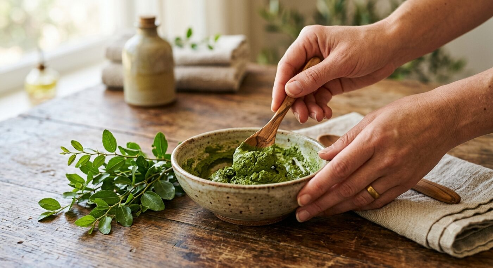

Avant de commencer : le matériel et les précautions
Utilisez toujours un récipient et des ustensiles non métalliques (verre, bois, plastique alimentaire), car le métal peut altérer certains composés végétaux. Faites un test dans le pli du coude 24 heures avant la première application, en particulier si vous avez la peau ou le cuir chevelu sensible. Comptez environ 2 à 4 cuillères à soupe de poudre de sidr pour des cheveux mi-longs, à ajuster selon la longueur (Biorient, guide de la poudre de sidr).
1. La pâte de sidr de base (nettoyant cheveux)
Masque nettoyant simple
Dans un bol, mélangez la poudre de sidr avec de l'eau bien chaude jusqu'à obtenir une pâte lisse, sans grumeaux. Laissez reposer 5 minutes pour que le mélange s'épaississe légèrement. Appliquez sur cheveux humides, des racines aux pointes, en massant doucement le cuir chevelu du bout des doigts. Couvrez d'une charlotte, laissez poser 10 à 30 minutes puis rincez abondamment à l'eau tiède jusqu'à ce que l'eau ressorte claire (Poppy Seed Channel, masque à la poudre de sidr).

2. Le duo sidr et henné, pour fixer la couleur
Masque colorant et nettoyant
Mélangez à parts égales poudre de sidr et henné, ajoutez quelques gouttes de jus de citron pour activer les pigments du henné, puis de l'eau tiède jusqu'à obtenir une texture de yaourt épais. Appliquez sur cheveux humides ou secs, des racines aux pointes. Couvrez d'une charlotte : comptez 30 à 45 minutes pour un simple soin nettoyant, jusqu'à 2 heures pour une coloration plus intense. Rincez longuement à l'eau tiède (La Vie Nature, la poudre de sidr pour les cheveux colorés).
3. La chantilly de sidr post-henné, pour hydrater
Soin hydratant fouetté
Faites infuser de l'eau chaude avec des plantes apaisantes de votre choix (camomille ou tilleul), laissez tiédir, puis mélangez-la à la poudre de sidr jusqu'à obtenir une pâte souple. Ajoutez un jaune d'œuf, une cuillère de miel ou de yaourt pour renforcer l'hydratation, puis fouettez l'ensemble pour obtenir une texture aérée façon « chantilly ». Appliquez généreusement, laissez poser 20 à 40 minutes sous charlotte, puis rincez à l'eau tiède (Un point c'est Lou, chantilly de sidr post-henné).
4. Le masque sidr et argile, pour cheveux gras ou racines fragiles
Masque purifiant
Mélangez la poudre de sidr avec de l'argile (verte ou blanche selon la sensibilité du cuir chevelu) dans un bol non métallique, puis ajoutez de l'eau tiède jusqu'à obtenir une pâte homogène. Cette association augmente l'effet absorbant pour les cuirs chevelus à tendance grasse (Marque Verte, masques à l'argile pour les cheveux). Appliquez principalement sur les racines, laissez poser 15 à 20 minutes maximum (l'argile ne doit pas sécher complètement sur cheveux), puis rincez abondamment.
5. Le masque apaisant sidr, miel et yaourt, pour la peau
Soin visage apaisant
Mélangez une cuillère à café de poudre de sidr avec une cuillère à café de miel et une cuillère à soupe de yaourt nature, jusqu'à obtenir une pâte lisse. Appliquez en couche fine sur peau propre et sèche, en évitant le contour des yeux. Laissez poser 10 à 15 minutes, puis rincez à l'eau tiède et terminez par votre soin hydratant habituel. Ce type d'association (sidr, miel, éléments hydratants) est couramment recommandé pour compléter les vertus nettoyantes du sidr par un apport hydratant (voir notre article sur le sidr et la peau).
Nos conseils pratiques pour réussir vos masques
- Préférez une poudre de sidr finement tamisée pour éviter les résidus difficiles à rincer.
- Rincez toujours à l'eau tiède, jamais brûlante, pour préserver les mucilages.
- Sur cheveux bouclés ou crépus, un rinçage en plusieurs étapes avec démêlage au peigne large facilite l'élimination complète de la poudre.
- Conservez la poudre de sidr non utilisée dans un contenant hermétique, à l'abri de la lumière et de l'humidité.